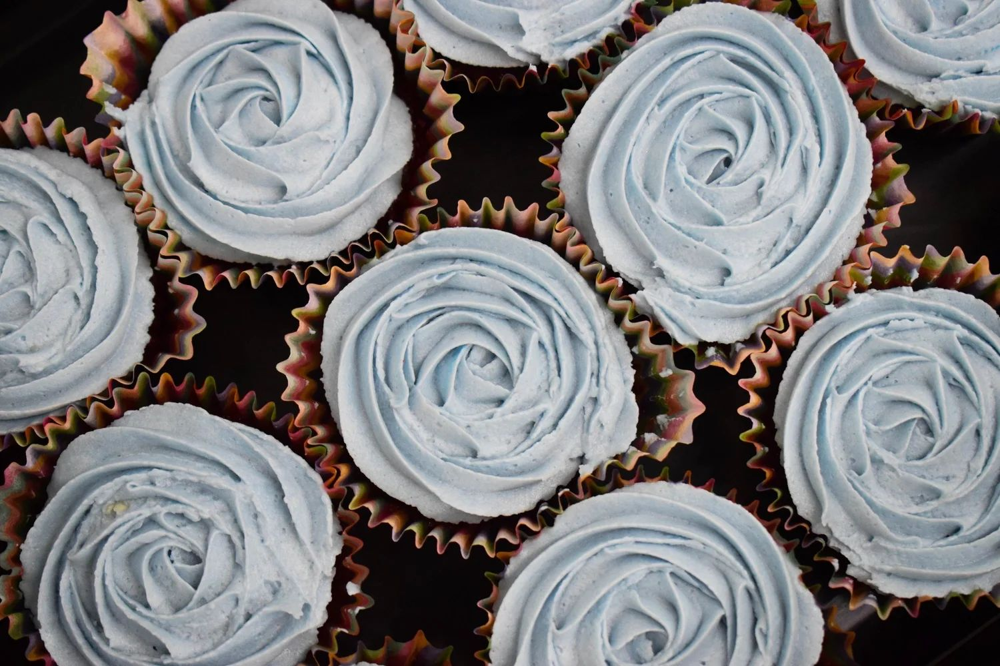
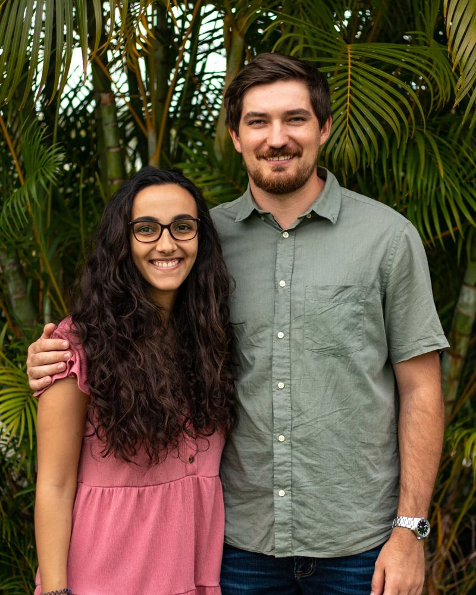

Meal Train
New baby, surgery, loss or a hard season? Be blessed by a meal train — or bless someone with a meal.
Hospitality meals →From the nursery to the lanai, every ministry exists to help one another know, love and follow Christ.
Keiki ministry includes ages 0–10, nursery through 4th grade. Every class seeks growth in Jesus through Bible study, lessons, music and crafts. Our vision is to see families grow together in gospel centrality — with parents as the primary disciplers of their children.
Keiki classes meet during our Lord's Day gathering. Service starts at 4:00 PM, and children may be checked in 15 minutes prior. Because safety is our priority, sign-in and sign-out by a parent or guardian is required; a greeter is always available to help.
Children gather to sing songs to Jesus, then break into classes for the day's lesson. Families are always welcome to worship together in the main service — if little ones grow restless, simply step out the back until things are settled.


During our services, the pastors pray with parents for their child, and charge them to raise their little ones in the discipline and instruction of the Lord. Invite friends, family, aunties and uncles to support you on this special day.
Schedule a DedicationThrough Spirit-led relational discipleship, we want our teens to mature in their relationship with God and their understanding of the gospel to the point where they make their faith their own — so that their love for God and the joy of their salvation radically shapes how they see themselves and how they love their families, friends and community.
Students meet every Thursday, 6–8 PM. We work through a gospel-centered curriculum geared toward teens, then split into smaller, gender-specific groups where leaders hear life updates, encourage students in their walk with Jesus and pray for them. And of course — games, friends and snacks.



Groups meet weekly in homes across the island for fellowship, Bible study, food and prayer. Groups also organize “Give Backs” to meet the practical needs of our island and show the love of Christ.
Questions? Call 808.756.9926 or email aloha@shorebreakchurch.com.
Find a Group Near YouWe believe we should model the Lord Jesus Christ by serving others.
We encourage every member to adopt the same posture and serve both the people here in the church and in our community — hosting, keiki, music, audio/visual, hospitality, facilities and more.
Find a Team to Serve In
New baby, surgery, loss or a hard season? Be blessed by a meal train — or bless someone with a meal.
Hospitality meals →Do you or someone you know need kōkua (help)? Our deacons are here to come alongside you.
Contact us →Women of the church meet through the year for study, prayer and fellowship — including our much-loved annual Women's Tea.
Email Margie →